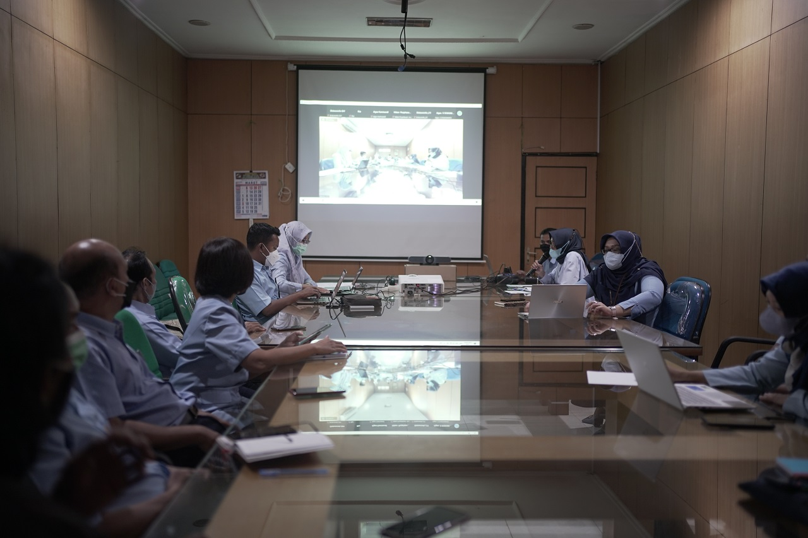
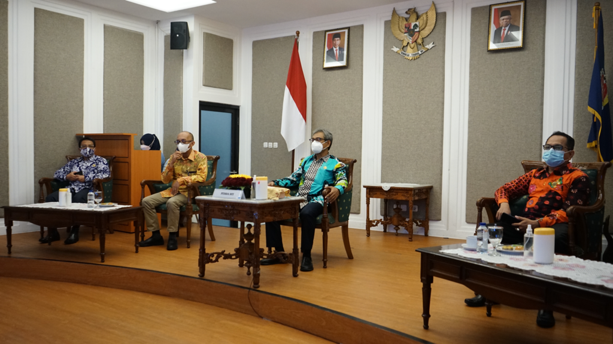
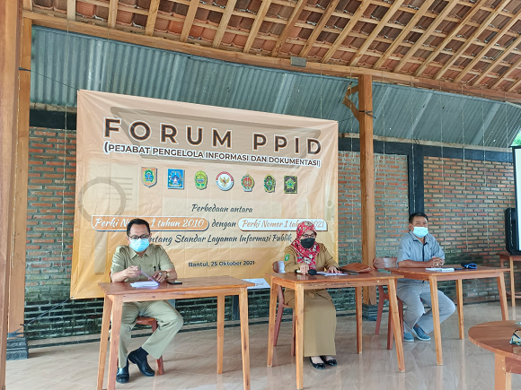

DASHBOARD
BERITA
GALERI
CONTOH BERITA

Diskominfo DIY selenggarakan Sosialisasi Internalisasi Gratifikasi, Benturan Kepentingan dan Whistle Blowing System
Dinas Kominfo DIY Selenggarakan Pelatihan UKM Berbasis Digital di Kapanewon Minggir
Rakor E-Lapor Pemda DIY "Fast Respond, Fast Solution, Trusted Complain Handling System"
Dinas Komunikasi dan Informatika DIY Selenggarakan Sosialisasi Sistem Pemerintahan Berbasis Elektronik (SPBE) di Lingkungan Pemda DIY
Dinas Komunikasi dan Informatika DIY Laksanakan Upacara Hari Pahlawan Tahun 2021

Pemerintah Daerah DIY Pertahankan Kualifikasi Informatif pada Anugerah Keterbukaan Informasi Publik Tahun 2021 dari Komisi Informasi Pusat RI

Dinas Komunikasi dan Informatika DIY menghadiri Forum PPID yang diadakan PPID Utama Kabupaten Bantul
Dinas Komunikasi dan Informatika DIY menyelenggarakan Pelatihan Penetration Testing bagi Tim JOGJAPROVCISRT
Dinas Komunikasi dan Informatika mengikuti Monev Komisi Informasi Pusat Tahun 2021
Perjanjian Kerja Sama Antara Diskominfo DIY dan PT. Telkom Indonesia (Persero) Tbk
Peningkatan Pengelolaan dan Pelayanan Informasi oleh Badan Publik
Beberapa Tips menjadi Youtuber yang Eksis di Google